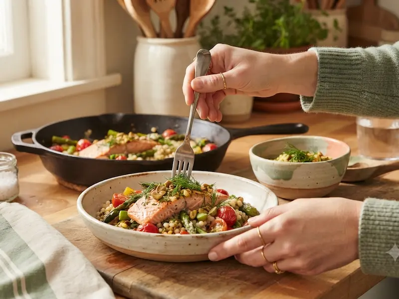
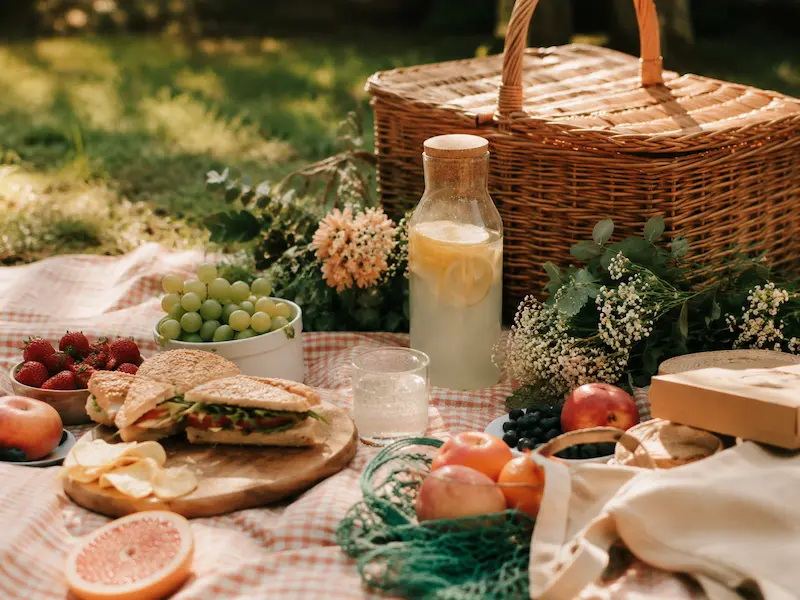
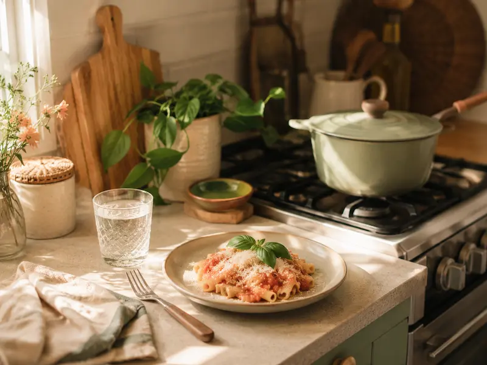
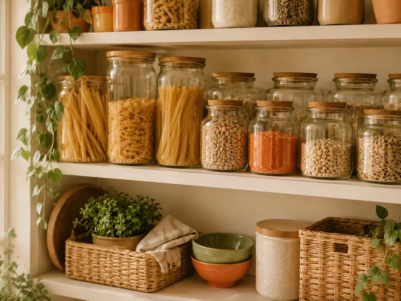

Está com Pressa?
Receitas rápidas e fáceis pra quem não abre mão de comer bem, mesmo com a agenda cheia.
Dicas, truques e ideias pra facilitar sua vida na cozinha (e fora dela também).

Receitas rápidas e fáceis pra quem não abre mão de comer bem, mesmo com a agenda cheia.

Tudo que você precisa saber pra aproveitar o dia ao ar livre sem esquecer nada.

Porções certas, sem sobra e sem desperdício. Cozinhar sozinha (ou a dois) também pode ser gostoso.

Um jeitinho simples de saber o que você tem, evitar desperdício e facilitar a vida na hora de cozinhar.